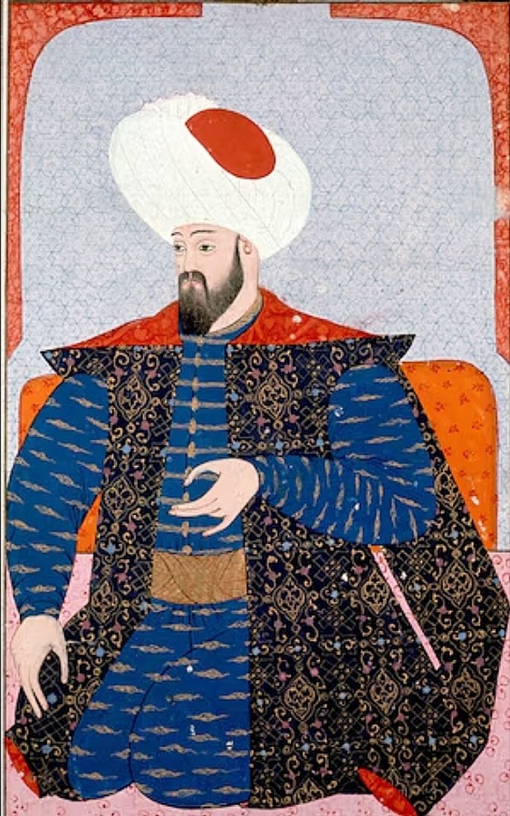

Nr. 1
Osman I.
- Regierung
- um 1299 – um 1324
- Lebensdaten
- um 1258 – 1323/24
- Begründer und Namensgeber des Osmanischen Reiches
- Eroberte byzantinische Gebiete in Bithynien (Nordwestanatolien)